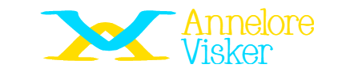

Example text:
I started my journey in web development during college when I built my first website for a school project—a simple blog using HTML/CSS/JavaScript. Since then, I've grown passionate about creating user-friendly interfaces and solving real-world problems through technology.
One funny anecdote is when I accidentally deleted an entire project's codebase while trying to refactor it! It was frustrating but taught me the importance of version control systems like Git.
Professionally, some highlights include working on [Project Name], which involved building a responsive e-commerce site using React.js for [Client Name]. This experience not only honed my frontend skills but also showed me how impactful well-designed digital solutions can be for businesses.
My "why" is rooted in making technology accessible to everyone through intuitive design principles and innovative solutions that solve everyday challenges.
Outside of coding, I enjoy hiking and exploring new outdoor spots—a hobby that keeps me grounded amidst all the screen time!
About My Journey
Explore the highlights of my journey: where I started, what I’m doing now, and where I’m headed next.
⏪
Play Back
I began my journey in [Year] when I started studying [Field of Study].
During this time, I developed strong foundations in [Key Skills].
After graduating, I worked on several projects that helped me refine my skills in [Specific Areas].
Some key milestones include:
Completing an internship at XYZ Corporation.
Participating in coding competitions to improve problem-solving skills.
These experiences not only honed my technical abilities but also taught me valuable lessons about teamwork and communication.
In the past, I struggled to showcase my skills effectively. My GitHub repositories were disorganized, and I lacked a cohesive platform to present my projects and achievements. Key milestones include:
Completed foundational education in web development.
Worked on small projects to hone my skills.
Received feedback about the importance of a portfolio website.
Full Stack Web Development Certification - University of XYZ (2020)
Responsive Web Design Certification - freeCodeCamp (2018)
⏯️
Now
Currently, I’m focused on expanding my skill set to include frontend development with React.js and backend development with Node.js. My recent projects include:
Building responsive web applications using TailwindCSS.
Creating RESTful APIs for scalable backend systems.
I am currently focused on building a personal branding portfolio that reflects my journey, skills, and aspirations. Key features include:
A homepage with an introduction and links to key sections.
An "About Me" section using this "Play Back, Now, Next" structure.
A "Projects" section showcasing my best work with live demos.
A blog where I share tutorials and insights about web development.
Success Metrics:
Increased LinkedIn profile views by 50% since launching the portfolio.
Received inquiries from three potential employers within the first month.
React Developer Certification - Udemy (In Progress)
Cloud Practitioner Certification - AWS Academy (In Progress)
⏩
Next
Looking ahead, my goal is to specialize further in full-stack development while exploring emerging technologies. In the future, I aim to:
Integrate AI into web applications using TensorFlow.js.
Contribute to open-source projects that make a meaningful impact.
My vision is to establish myself as a thought leader in web development while continuously updating my portfolio. Future goals include:
Adding advanced features like dark mode and search functionality.
Working on larger-scale projects to showcase full-stack skills.
Writing more comprehensive blog posts about solving real-world problems.
Collaborating on open-source projects and speaking at developer meetups.
Roadmap:
Timeline
Action Item
Next 3 Months
Add advanced features (dark mode, search bar).
Next 6 Months
Publish 5 new blog posts on trending tech topics.
Next 12 Months
Contribute to at least 2 open-source projects.
Beyond 12 Months
Speak at local developer meetups or conferences.
Advanced React and GraphQL Certification - Planned for 2025
Kubernetes Administrator Certification - Planned for 2026
Machine Learning Specialist Certification - Planned for 2026+